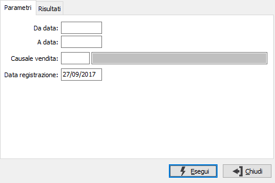
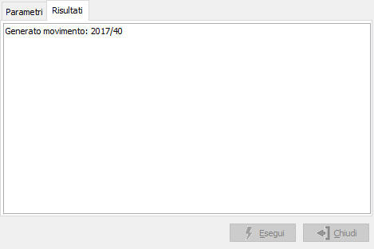

Generazione magazzino
Il programma effettua la generazione dei movimenti di magazzino utilizzando i dati dei movimenti di vendita esistenti in archivio in base ai parametri inseriti dall’utente. Saranno trattati solo i movimenti che non abbiano ancora effettuato la generazione e le cui causali siano configurate per tale gestione.

DA DATA: data documento da cui si vuole iniziare la selezione. Confermando a vuoto, la selezione inizia dalla prima data valida.
A DATA: data documento con cui si vuole concludere la selezione. Confermando a vuoto, la selezione inizia dalla prima data valida.
CAUSALE VENDITA: codice della causale documento per cui si vuole effettuare la selezione. Confermando a vuoto, la selezione riguarderà tutte le causali. Sul campo sono attive le funzioni di ricerca (F9).
DATA REGISTRAZIONE: indica la data con cui saranno registrati i movimenti di magazzino.
La pressione sul pulsante Esegui determina l'inizio dell'elaborazione dei documenti. Il risultato viene visualizzato nella pagina 'Risultati'.

Nella pagina vengono visualizzati gli errori eventualmente occorsi durante la fase di elaborazione dei documenti o se ci sono dati non corretti nei documenti elaborati.